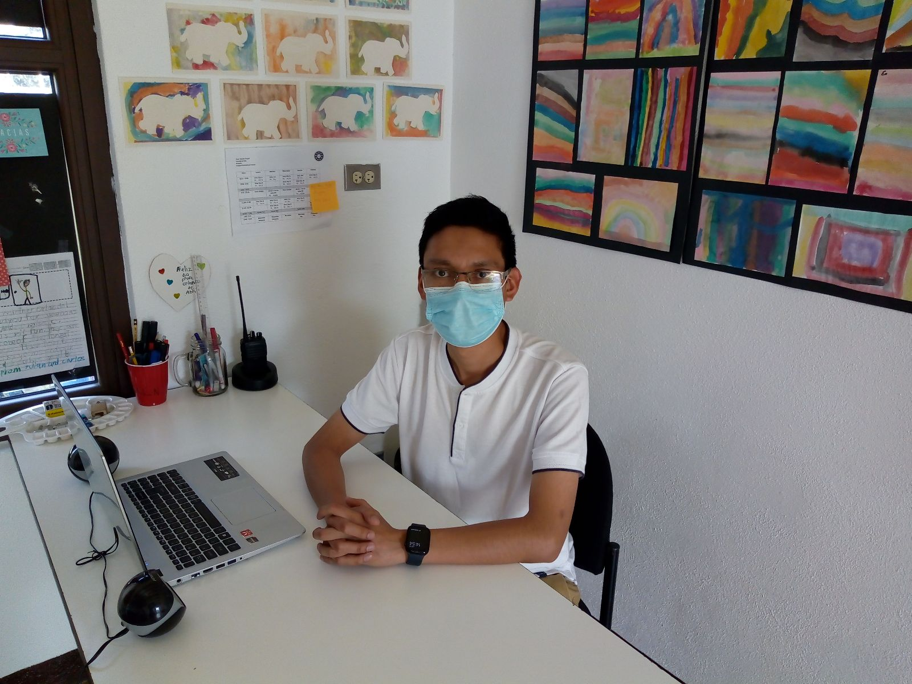

Entrevista con Orlando Sicajol
Aqui estare escribiendo las preguntas y las respuestas de la entrevista realizada con Orlando Sicajol, maestro de música y arte en Antigua Internation School.
La Entrevista:
¿Tiene algún pasatiempo?
Mi pasatiempo favorito es salir en momentos de recreación con mi familia y me gusta tocar instrumentos y hacer cosas de carpintería
-¿Tiene usted alguna mascota, animal de preferencia?
Acaban de fallecer las mascotas que teníamos y desde entonces no quise tener más. Teníamos un perro que vivió 15 años, y un hamster. Los animales lo dejan a uno muy inquieto cuando se mueren.
-¿Qué le gusta leer?
Me gusta leer sobre artículos sobre la segunda guerra mundial. Sobre las batallas, como afectó la guerra, que pasó después de ellas…
-¿Qué le motiva?
Ayudar a los demás. Me hace sentir bien a mi. Siento que puedo apoyar a mi comunidad en lo que puedo hacer. Y en mi vecindario, en el pueblo, en el colegio también.
-¿Es introvertido o extrovertido?
Tengo un balance. En algún momento me siento cómodo y puedo platicar. Pero en otros momentos me siento bien pensando o leyendo. No es que me guste mas algo o el otro.
-¿Ha participado en causas benéficas o sociales? Especifique; cómo, cuándo y dónde.
Si, por supuesto. Antes de estar en AIS participé en una charla para adolescentes de diferentes institutos de escuelas en Sacatepéquez de como construir valores que impacten a nuestra comunidad.
-¿Quién le inspira actualmente y por qué?
Creo en Dios, y él es el primero al quien le temo y me hace sentir mas cerca de él, y eso me hace sentir que puedo ayudar a los demás haciendo lo mejor posible. Tengo muchas personas, pero mi principal es el.
-¿Qué le gustaría que cambiara en la sociedad actual y por qué?
Me gustaría que todos tuviéramos el mismo temor a dios. Si eso cambia, todo lo demás cambian, pero si no tenemos temor a él, menos vamos a ayudar a las personas.
-¿Qué le gustaría que fuera su legado? (espiritual, cultura, ideas o tradiciones)
Me gustaría que fuera que no nos cansemos de hacer el bien.
-¿Comida favorita?
Lasaña
-¿Serie o libro favorito?
Band of brothers. Serie de HBO
-¿Cuál es su música favorita?
Instrumental.
-Artista favorito
Marcus Vidal
-Materia que más le gustó cuando estudio.
La teoria musical
-¿Cuál es su opinión sobre la educación actual?
Hay muchos lugares que lo hacen bien, y otros que deberían ser honestos para enseñar.
-¿Cómo se lleva con los estudiantes del colegio?
Muy bien. Disfruto mis clases.
-¿Qué piensa sobre AIS? ¿Lo positivo? ¿Lo negativo?
Es una verdadera comunidad. Tiene un campus muy bonito y busca mejorar cada día. Lo negativo puede ser que no hay suficiente tiempo para ir tomando aire y preparar tus cosas. Siento que ha sido más por la pandemia que por AIS.
